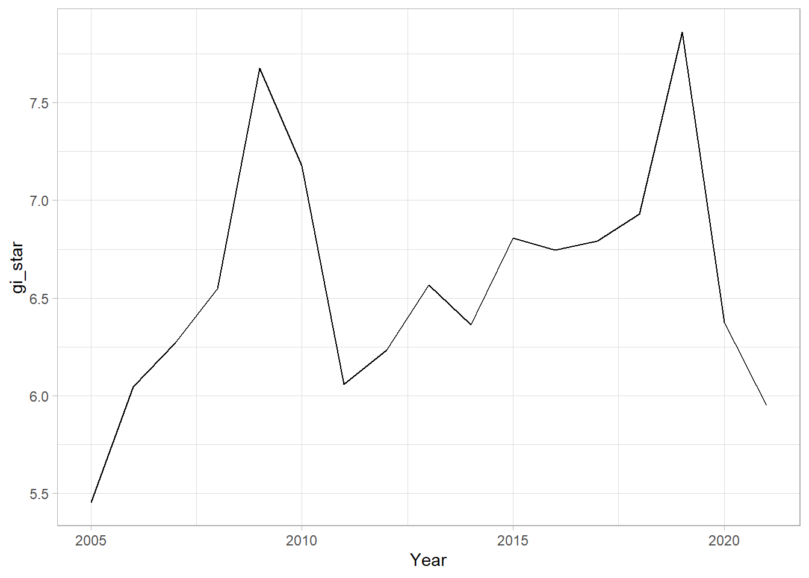
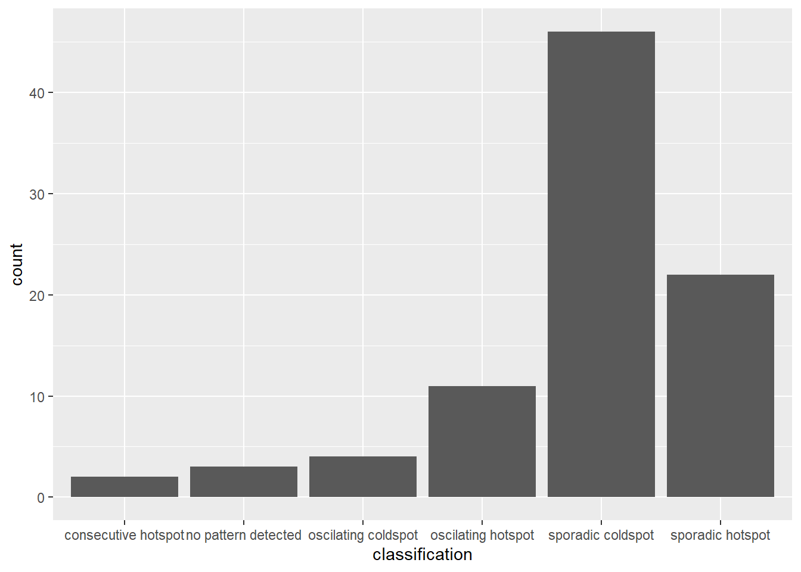

pacman::p_load(sf, sfdep, tmap, plotly, tidyverse, dplyr)In-class Exercise 7: Emerging Hot Spot Analysis: sfdep methods
Getting started
Installing and Loading the R Packages
The Data
Importing geospatial data
hunan <- st_read(dsn = "data/geospatial",
layer = "Hunan")Reading layer `Hunan' from data source
`C:\tiffanik\IS415-GAA\In-class_Ex\In-class_Ex07\data\geospatial'
using driver `ESRI Shapefile'
Simple feature collection with 88 features and 7 fields
Geometry type: POLYGON
Dimension: XY
Bounding box: xmin: 108.7831 ymin: 24.6342 xmax: 114.2544 ymax: 30.12812
Geodetic CRS: WGS 84Importing attribute table
GDPPC <- read_csv("data/aspatial/Hunan_GDPPC.csv")Rows: 1496 Columns: 3
── Column specification ────────────────────────────────────────────────────────
Delimiter: ","
chr (1): County
dbl (2): Year, GDPPC
ℹ Use `spec()` to retrieve the full column specification for this data.
ℹ Specify the column types or set `show_col_types = FALSE` to quiet this message.Creating a Time Series Cube
GDPPC_st <- spacetime(GDPPC, hunan,
.loc_col = "County",
.time_col = "Year")is_spacetime_cube(GDPPC_st)[1] TRUEComputing Gi*
Deriving the spatial weights
GDPPC_nb <- GDPPC_st %>%
activate("geometry") %>%
mutate(nb = include_self(st_contiguity(geometry)),
wt = st_inverse_distance(nb, geometry,
scale = 1,
alpha = 1),
.before = 1) %>%
set_nbs("nb") %>%
set_wts("wt")! Polygon provided. Using point on surface.Warning in st_point_on_surface.sfc(geometry): st_point_on_surface may not give
correct results for longitude/latitude datahead(GDPPC_nb)spacetime ────Context:`data`88 locations `County`17 time periods `Year`── data context ────────────────────────────────────────────────────────────────# A tibble: 6 × 5
Year County GDPPC nb wt
<dbl> <chr> <dbl> <list> <list>
1 2005 Anxiang 8184 <int [6]> <dbl [6]>
2 2005 Hanshou 6560 <int [6]> <dbl [6]>
3 2005 Jinshi 9956 <int [5]> <dbl [5]>
4 2005 Li 8394 <int [5]> <dbl [5]>
5 2005 Linli 8850 <int [5]> <dbl [5]>
6 2005 Shimen 9244 <int [6]> <dbl [6]>Computing Gi*
gi_stars <- GDPPC_nb %>%
group_by(Year) %>%
mutate(gi_star = local_gstar_perm(
GDPPC, nb, wt)) %>%
tidyr::unnest(gi_star)Mann-Kendall Test
cbg <- gi_stars %>%
ungroup() %>%
filter(County == "Changsha") |>
select(County, Year, gi_star)ggplot(data = cbg,
aes(x = Year,
y = gi_star)) +
geom_line() +
theme_light()
p <- ggplot(data = cbg,
aes(x = Year,
y = gi_star)) +
geom_line() +
theme_light()
ggplotly(p)cbg %>%
summarise(mk = list(
unclass(
Kendall::MannKendall(gi_star)))) %>%
tidyr::unnest_wider(mk)# A tibble: 1 × 5
tau sl S D varS
<dbl> <dbl> <dbl> <dbl> <dbl>
1 0.235 0.202 32 136. 589.ehsa <- gi_stars %>%
group_by(County) %>%
summarise(mk = list(
unclass(
Kendall::MannKendall(gi_star)))) %>%
tidyr::unnest_wider(mk)Arrange to show significant emerging hot/cold spots
emerging <- ehsa %>%
arrange(sl, abs(tau)) %>%
slice(1:5)Performing Emerging Hotspot Analysis
ehsa <- emerging_hotspot_analysis(
x = GDPPC_st,
.var = "GDPPC",
k = 1,
nsim = 99
)Visualising the distribution of EHSA classes
ggplot(data = ehsa,
aes(x = classification)) +
geom_bar()
Visualising EHSA
error here
hunan_ehsa <- hunan %>% left_join(ehsa, by = join_by(County == location))
ehsa_sig <- hunan_ehsa %>% filter(p_value < 0.05) tmap_mode(“plot”) tm_shape(hunan_ehsa) + tm_polygons() + tm_borders(alpha = 0.5) + tm_shape(ehsa_sig) + tm_fill(“classification”) + tm_borders(alpha = 0.4)